耶拿是一座具有中世纪风格的小城，后来成为德意志民主共和国的一部分。1902年6月，年轻的英国哲学家伯特兰·罗素往这里发了一封信，收信人是53岁的戈特洛布·弗雷格。尽管弗雷格相信自己已经做出了重大的发现，但他的工作却几乎完全被遗忘了。当他读到下面这些话时，他一定是比较欣慰的，“我发现我在一切本质方面都赞成您的观点……我在您的著作中找到了在其他逻辑学家的著作中不曾有过的探讨、区分和定义。”但这封信又接着写道，“我只在一个地方碰到了困难。”弗雷格不久就认识到，正是这个“困难”几乎导致他毕生的工作毁于一旦。罗素又继续写道：“对基本问题进行严格的逻辑处理依然相当滞后，我在您的著作中找到了我所知道的这个时代最优秀的东西，因此，请允许我向您表达深深的敬意。”但这已经于事无补了。
弗雷格马上给罗素回信承认这个问题。当时，他把自己的逻辑方法应用于算术基础的著作的第二卷马上就要出版，于是他连忙加了一个补遗，开头是这样的：“正当工作就要完成之时发现那大厦的基础已经动摇，对于一个科学工作者来说，没有什么能比这更为不幸的了。伯特兰·罗素的一封信使我置身于这样的境地。”
又过了许多年，此时距弗雷格去世已逾40年，伯特兰·罗素写道：
当代哲学家迈克尔·达米特的大部分工作都受到了弗雷格思想的启发。然而，当他谈到弗雷格的“正直”时，却是别有一番心情：
弗雷格的贡献极为重要。他提出了把普通数学中一切演绎推理都包含在内的第一个完备的逻辑体系，他用逻辑分析工具来研究语言的开拓性工作为哲学的主要发展提供了基础。今天，在一个标准的大学图书馆中，在“戈特洛布·弗雷格”的条目下可以查到50多项。然而，当他1925年去世时却很痛苦，他认为自己一生的工作毫无结果，他的死也没有受到学术界的注意。即使是现在，我们对他个人生活的了解也少得可怜。3
1848年11月8日，戈特洛布·弗雷格出生在注定要成为德意志民主共和国一部分的小城维斯玛。他的父亲是一个信仰新教的神学家，担任一所女子中学的校长职务（他的母亲也在那里工作）。弗雷格38岁那年与35岁的玛格丽特·丽瑟贝格结了婚，7年后丽瑟贝格便去世了，没有留下子嗣。1908年，弗雷格应一位牧师亲戚的请求，领养了一个5岁大的孤儿。正是这个儿子阿尔弗雷德把弗雷格写于1924年的声名狼藉的日记公之于众，从而使迈克尔·达米特对事实的真相气愤不已。阿尔弗雷德·弗雷格本人则于1944年6月在德军占领巴黎的一次战斗中被杀，此时联军登陆诺曼底刚刚过去一个多星期，距巴黎解放也只有两个月了。阿尔弗雷德从他父亲的手稿中打印出这本日记，并于希特勒掌权5年后的1938年把它送到了海因利希·肖尔茨负责的弗雷格档案馆。在那个年代，令迈克尔·达米特气愤不已的情绪在德国似乎是司空见惯的。手稿本身以及阿尔弗雷德写的关于他父亲的一本传记都遗失了。
弗雷格进入大学时是21岁。在耶拿大学呆了两年之后，他到了哥廷根大学。3年之后，他在那里拿到了一个数学博士学位。接着，他被任命为耶拿大学的编外讲师。这个时候，弗雷格似乎是由他的母亲资助的，父亲死后，母亲便接管了女子学校。5年以后，弗雷格被任命为耶拿大学的副教授，在那里他一直呆到1918年退休。他的同事并不很欣赏他的工作，所以他从未晋升为正教授。
1873年，新统一的德国一片欢腾。与拿破仑三世的法国进行的战争以伟大的胜利而告终，工业正以极快的速度发展着。德皇威廉一世去世之前，他的首相俾斯麦一直通过一种圆滑的政策，即一个精心培育的联盟体系来维护德国的安全。在弗雷格的一生中，俾斯麦和威廉皇帝一直是他心目中的英雄。然而，俾斯麦是一个主张皇帝完全掌管军事外交的彻底的保守分子，他憎恶民主，并且制定法律禁止了社会民主党的许多活动。
威廉二世在继任后不久便解除了俾斯麦的职务。新皇帝是一个虚荣而缺乏自信的人，他实行了一种灾难性的外交政策。他对自己的策略所能造成的影响一次次地判断失误，这使得其他欧洲政权如此恐慌，以至于法国、俄国和英国组成了一个联盟来对付德国。面对着东边俄国和西边法国的腹背受敌的战争危险，德国参谋部抛出了机智但最终是灾难性的“施利芬计划”，以期能够抢在俄国动员起来之前迅速击溃法国。4
1914年夏，由于斐迪南大公被刺以及德国的怂恿，奥地利入侵塞尔维亚，挑起了第一次世界大战。为了表明不能允许奥地利侵略其斯拉夫兄弟的决心，俄国开始了动员。德国将军向德皇解释说，作为回应，他们必须马上实施通过比利时发动袭击的“施利芬计划”。随后，德军对中立的比利时的侵犯把英国也拖入了这场灾难性的战争，其后果所造成的阴影笼罩了整个20世纪。战争期间，事情很少按照计划进行，当“施利芬计划”逐渐被终止时，战争陷入了悲惨的僵局，整整一代欧洲人的中坚力量在战壕中惨遭杀戮。德国的学术界中有许多人似乎还不知道战争的形势越来越糟，他们还在为和平奔走呼号，而德国也将并吞大量地盘，包括比利时全境。
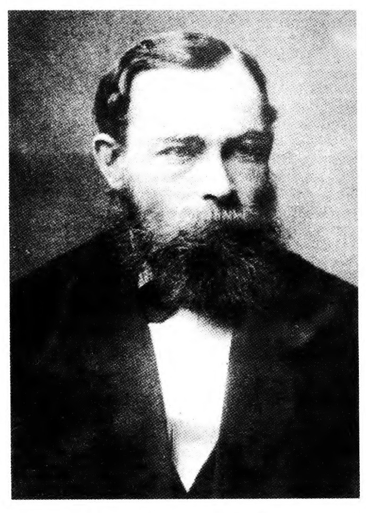
（数理逻辑与基础研究所，明斯特大学）
正当胜利与德国无缘，英国的包围造成德军伤亡之时，军事指挥权落到了鲁登道夫将军手里。这个反复无常的赌徒（他后来参加了希特勒的啤酒馆政变）拒绝妥协，直到英军在巴尔干半岛的一次突围差点卷击德军的侧翼，鲁登道夫才愁眉苦脸地向德皇禀报不得不休战。这样便结束了战争和德国的君主制。
新的德国共和国的执政党是社会民主党，许多德国人（包括弗雷格）都相信德国是违背自己的意志被迫进行战争的，它不曾战败，而是被社会主义者和（许多人马上又加上）犹太人出卖了。正是这种有害的气氛最终为希特勒掌权创造了机会。
1923年，战后的恶性通货膨胀使私人存款以及弗雷格的养老金变得一文不值。由此导致的贫困迫使他不得不寄宿在亲戚家里，一直到他1925年在维斯玛附近的巴特克莱纳去世。正是在这样的环境下，他写了他那可悲的日记。他希望能有一位伟大的领袖把德国从它所陷入的卑下地位中拯救出来。弗雷格曾经对鲁登道夫抱有很高的希望，但后来却失望地发现他参与了希特勒的政变。他仍然对鲁登道夫将军抱有幻想，但却担心他的年纪太大了。弗雷格没有活着看到兴登堡把共和国的钥匙交给了阿道夫·希特勒。
在1924年4月所写的日记中，弗雷格回忆起一段他家乡的犹太人正以一种他认为合适的方式被对待的时光，而且还公开了他关于法国人及其有害影响的观点：
充分准确地定义犹太人，以便能够制定法律对付他们，这个问题对于弗雷格来说还只是个理论问题，而在纳粹统治之下就成了一个非常实际的问题。根据这种纳粹的种族代码，20世纪最伟大的思想家之一，并且是弗雷格的崇拜者和学生的路德维希·维特根斯坦就算得上是一个犹太人。
还有些日记责骂了社会民主党人和天主教徒：
弗雷格极端右翼的思想在一战后的德国并不罕见。然而，我们也许想知道日记是否只代表着一个痛苦的（或许也是衰老的）老人在临死前一年的思想。可惜，弗雷格曾经持右翼思想一段时间，这是没有什么疑问的。弗雷格的同事，耶拿大学的哲学教授布鲁诺·鲍赫曾在战争期间创立了一个右翼的哲学协会（DPG），并担任其会刊的编辑工作。弗雷格是DPG的早期追随者之一，而且还在其会刊上发表文章。鲍赫关于民族概念的文章宣称，没有犹太人可能真正成为德国人。当纳粹1933年上台时，他的组织曾全力支持过纳粹。7
当我们从弗雷格晚年可怕的观点转向他年轻时做出的辉煌贡献时，不禁会大舒一口气。1879年，15他出版了一本不到100页的小册子，名为《概念文字》（Begriffsschrift）。这是一个很难翻译的词，由弗雷格从德文词“Begriff”（概念）和“Schrift”（大致为“文字”或“书写方式”之意）拼接而成。其副标题是：“一种模仿算术语言构造的纯思维的形式语言”。这部著作被誉为“也许是自古以来最重要的一部逻辑学著作”。8
弗雷格试图找到一个能够包含数学实践中全部演绎推理的逻辑系统。布尔把普通代数作为出发点，用代数符号来表示逻辑关系。就像其他的数学分支那样，由于弗雷格想以他的逻辑为基础而把代数构造出来，所以引入自己的特殊符号来表示逻辑关系以避免混乱是很重要的。布尔曾经认为用于表示其他命题之间关系的命题是二阶命题，在这里，弗雷格发现那些连接命题的关系也可被用于分析命题的结构，他把这些关系充当了他的逻辑的基础。后来这一重要思想被普遍接受，成为了现代逻辑的基础。
例如，弗雷格会用逻辑关系如果……，那么……来分析句子
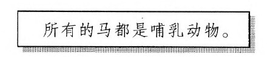
即
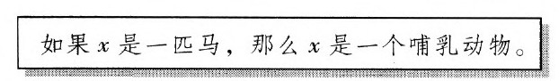
类似地，他会用逻辑关系……且……来分析句子
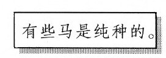
即
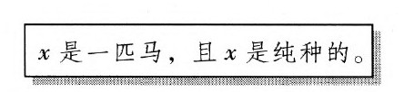
然而，在这两个例子中，字母x的用法是不同的。在第一个例子中，我们想说的是，无论x可能是什么，即对于任何x，所断言的都为真。但在第二个例子中，我们想断言的只是对于某个x。在目前使用的符号体系中，对于任何被记作，对于某个被记作。于是。两个句子可以写为如下形式：
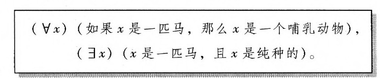
符号？是一个倒写的A，暗示“所有”（All），称为全称量词。
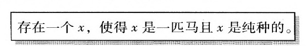
符号？是一个侧写的E，旨在暗示“存在”（eexists），称为存在量词。于是第二个句子可以读作通常把逻辑关系如果……，那么……记为，把……且……记为∧。利用这些符号，上面的句子就变成：9
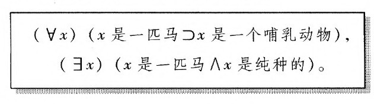
这可以被缩写为下面的形式：
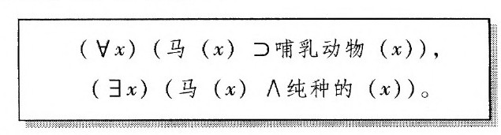
甚或更简洁地写成：
（x）（马（（x）∩哺（（x）），
（x）（马（x）∧纯（（x））。16
在上一章中，我们举了乔和苏珊用逻辑来寻找乔的支票簿的例子。在那个例子中，我们用字母简化句子如下：
L=乔把支票簿忘在了超市。
F=乔的支票簿在超市找到了。
W=乔昨晚在饭馆开了一张支票。
P=昨晚开了支票之后，乔把支票簿放在了他的夹克口袋里。
H=乔从昨晚起就没有再用过他的支票簿。
S=乔的支票簿仍然在他的夹克口袋里。
他们的推理可以归结为如下模式：
前提：
如果L，那么F。
非F。
W且P。
如果W并且P并且H，那么S。
H.
结论：
非L。
S.
如果用符号┓来表示“非”，并且利用我们已经介绍过的其他符号，则上面的句子就变成：
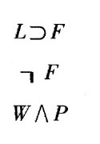
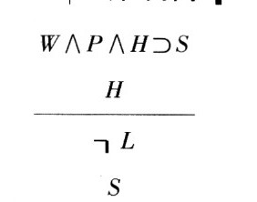
还有最后一个符号：V代表……或……。下表是对我们已经介绍过的符号的总结：
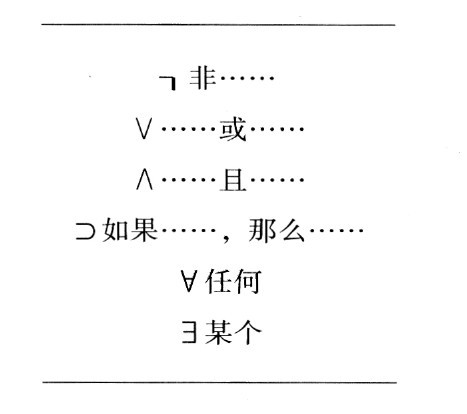
在上一章的结尾，我们举了一个逻辑结构无法用布尔的方法进行分析的例子，即所有失败的学生或是糊涂的或是懒惰的。
而对弗雷格的逻辑而言，它是很简单的。如果用
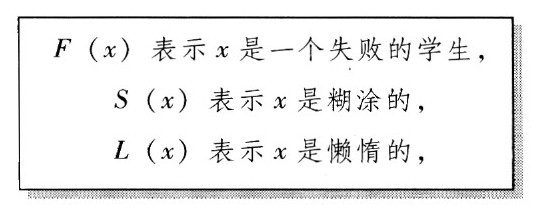
则这个句子可以表示为：
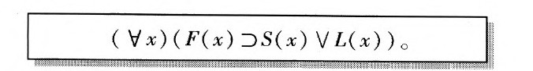
现在我们应该很清楚了，弗雷格并不仅仅是对逻辑进行一种数学处理，他实际上创立了一种新的语言。在这一点上，他以莱布尼茨的普遍语言思想为导向，只要恰当地选择符号，语言就可以获得力量。10这种语言的表达能力可以从下面的例子中体现出来，其中我们用L（x, 、y）来表示x爱y：
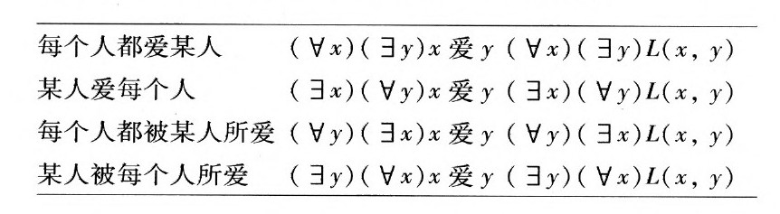
下面是另外一个例子：
每个人都爱一个情人。
我们先把它写成
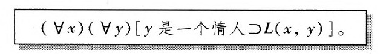
如果我们把“一个情人”理解为“爱某个人”，则我们就可以用（z）L（y，）来代替y是一个情人，最后我们得到：
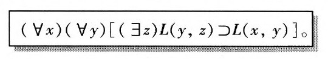
布尔的逻辑只不过是需要用普通数学方法进行发展的另一数学分支，这当然包括使用逻辑推理。但是用逻辑来发展逻辑有些循环。在弗雷格看来，这是不可接受的。他的目标是要表明一切数学如何可能被建立在逻辑的基础之上。为了令人信服地做到这一点，弗雷格必须找到某种不用逻辑来发展他的逻辑的方法。他的解决办法是用铁面无情的精确的语法规则或句法规则把他的概念文字发展成一种人工语言。这就使得把逻辑推理表示为机械演算即所谓的推理规则成为可能，这些规则仅仅与符号排列的样式有关。这也是第一次用精确的句法构造出形式化的人工语言。从这个观点看，概念文字是我们今天使用的所有计算机程序设计语言的前身。
弗雷格最基本的推理规则是这样来使用的：如果◇和△是用弗雷格概念文字写成的任意两个句子，那么如果◇和（◇属于△）都得到断言，则句子△也可以得到断言。关于这一演算，我们只需注意它的执行，而不需要理解？是什么意思。当然，我们可以看出这条规则是不可能导致错误的，因为它仅仅能够使我们从◇和（如果◇，那么△）推出△。但在实际运用这条规则的时候，只需把组成◇这个句子的一个个符号与长句第一部分的符号进行对应。11在那个寻找乔的支票簿的例子中，我们的前提是：
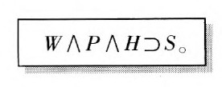
如果我们也能够断言W∧P∧H，那么该规则就可以使我们断言所需的结论之-S。下面就是对应的情况：
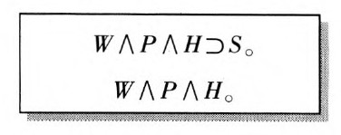
弗雷格的逻辑已经成了在数学系、计算机科学系和哲学系教给本科生的标准逻辑。12它曾是一大块研究领域的基础，并且间接地帮助图灵提出了一种通用计算机的思想。但我们现在讲这些还为时过早。
弗雷格的逻辑比布尔的逻辑前进了一大步。第一次有一个精密的数理逻辑体系至少在原则上包含了数学家们通常使用的全部推理。但在达到这个目标的过程中，也有一些东西失去了。从弗雷格逻辑中的某些前提出发，我们可以尝试运用弗雷格的规则以获得希望得到的结论。但如果这一尝试失败了，弗雷格就没有办法知道，这到底是由于智力发挥得不够或坚持不够彻底，还是因为希望得到的结论根本就无法从前提中导出。这一缺陷意味着弗雷格的逻辑还没有实现莱布尼茨之梦，即说一句“让我们算一下”，那些知道逻辑规则的人就可以成功地判定某个结论是否可以导出。
如果弗雷格的逻辑是一项这么了不起的成就，那么罗素的信为什么会令弗雷格如此沮丧呢？弗雷格认为他的逻辑只是朝着为算术提供完备的基础迈出了一步。尽管人们已经从莱布尼茨和牛顿的微积分中得出了丰硕的成果，但数学家们习惯于使用的某些推理步骤是否是正当的，这还很成问题。19世纪时，这些问题终于通过新发展出的一种深刻的数系理论而逐步得到了澄清。最终一切都归结为所谓的自然数：
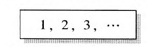
弗雷格希望能为自然数提出一种纯粹逻辑的理论，从而证明算术、微积分的所有进展乃至一切数学都可以被看成逻辑的一个分支。这种后来被称为逻辑主义的观点也同样为伯特兰·罗素所持有。逻辑主义曾被美国逻辑学家阿隆佐·丘奇解释为：主张逻辑与数学的关系就是同一学科的基本部分和高等部分之间的关系。17
于是，弗雷格便希望能用纯逻辑术语来定义自然数，然后再用他的逻辑导出它们的性质。例如，3这个数将被解释为逻辑的一部分。这如何可能呢？自然数是集合的一种属性，即它的元素的数目。3这个数是为下面所有事物所共有的某种东西：三位一体、并驾拉车的三匹马的集合、三叶草的叶子的集合、字母{a,b，c}的集合。显然，我们可以看到这些集合中任意两个的元素数目都相等。我们可以把它们一一对应起来。弗雷格的思想是要把3这个数等同于所有这些集合的集合。也就是说，3这个数只不过是所有3个一组的事物的集合。一般而言，一个给定集合的元素数目可以被定义为：能够与给定集合一一对应的所有那些集合的集合。13
弗雷格关于算术基础的两卷著作阐述了如何利用他的《概念文字》所提出的逻辑发展出自然数的算术。伯特兰·罗素在1902年的信中向弗雷格指出，他的整个工作是不一致的，也就是说是自相矛盾的。事实上，弗雷格的算术使用了集合的集合。罗素在信中指出，用集合的集合进行推理很容易导致矛盾。罗素的悖论可以这样来说明：如果一个集合是它自身的一个成员，那么就把这个集合称为异常的；否则就称它为正常的。一个集合如何可能是异常的？罗素自己举的关于异常集合的例子是：所有那些能够用数目少于19的英语单词定义的东西所组成的集合（the set of all those things that can be defined in fewer than 19 Englis hwords）。由于方才我们仅用16个（英文）词就把这个集合定义了，所以它属于它自身，从而是异常的。另一个例子是：所有不是麻雀的东西所组成的集合。无论这个集合是什么，它都肯定不是一只麻雀，所以这个集合也是异常的。
罗素指出，如果把所有正常集合所组成的集合记为ε，那么ε是正常的还是异常的？答案必定非此即彼。但情况似乎并非如此。ε是正常的吗？如果ε是正常的，那么由于ε是由所有正常集合所组成的集合，它就将属于自身。而这恰恰说明它是异常的。如此一来，ε就只能是异常的了。可是，由于它是由所有正常集合所组成的集合，所以它将不属于自身。而这恰恰又使它成为正常的！无论哪个结果都导致了矛盾！
罗素的悖论是大量令人大伤脑筋的有趣难题之一。而当弗雷格收到罗素的信时，他可没有觉得有趣。他马上意识到，这一矛盾可以从他用于发展算术的系统中导出。如果一则数学证明陷入矛盾，那么就证明该论证的前提之一是错误的。从古至今，这条原则都被当成一种有用的证明方法：要证明一个命题，我们只要说明否定它会导致矛盾就可以了。但是对于可怜的弗雷格来说，这一矛盾表明他的体系所基于的那些前提是靠不住的。弗雷格再也没有从这个打击中恢复过来。14
1892年，弗雷格在一份哲学杂志上发表了一篇论文，它的题目或可译为“论含义与指称”（On Sense and Denota-tion）。15除了弗雷格的逻辑，正是这篇论文的内容才使哲学家对他的工作如此感兴趣。
弗雷格指出，我们可以用不同的语词来命名或指称同一个具体对象，尽管它们有着非常不同的含义或意思。他的著名例子是“晨星”和“昏星”。它们的含义是非常不同的：一个是指日落后看到的星星，另一个是指日出前看到的星星。但两者都指称同一颗星体——金星。两者指的是同一对象，这个事实并不是显然的，它一度曾是一项真正的天文发现。弗雷格的某些考虑与替代性有关：考虑下面这个句子是非常不同的，尽管相对于其中的某一句话而言，另一句话只是替换了一个指称相同对象的语词而已。
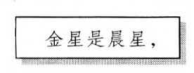
这些思想标志着20世纪哲学的一个主要分支——语言哲学的开端。16可以说，当代计算机科学的某些重要概念也是源自这篇文章。17
弗雷格认为他的《概念文字》体现了莱布尼茨所憧憬的逻辑的普遍语言。的确，弗雷格的逻辑可以处理林林总总、各不相同的对象。但在莱布尼茨看来，这很可能会令他失望。它至少在两个方面未能如他心意。莱布尼茨曾经设想过这样一种语言，它不仅能够进行逻辑演绎，而且也能自动包含科学与哲学中的一切真理。只有在基于实验和理论的科学在18～19世纪突飞猛进之前，这种幼稚的期盼才是可以设想的。
从我们的主题来看，指出弗雷格逻辑的另一个局限性是更恰当的。莱布尼茨曾经设想过一种能够成为有效的计算工具的语言，这种语言将通过对符号的直接操作而使逻辑推理自动进行。事实上，在弗雷格的逻辑中，除了那些最简单的演绎，其余的情况都复杂得让人难以忍受。这些演绎不仅长得可怕，而且在弗雷格的概念文字的逻辑中，他的规则也没有为判定某个结论是否可以从给定前提中推导出来提供计算步骤。
由于概念文字的确完全包含了普通数学中所用到的逻辑，所以用数学方法来研究数学活动本身也就成为可能了。正如我们将会看到的，从这些研究中得出了一些让人意想不到的非凡成果。能否找到一种计算方法，它能够说明在弗雷格的逻辑中某一推理是否是正确的呢？这种探究在1936年达到了高潮，其结果是这样一则证明：没有这样的一般方法存在。对于莱布尼茨的梦想来说，这并不是一条好消息。然而，正是在证明这条否定性结论的过程中，阿兰·图灵发现了某种必定会令莱布尼茨欣喜的东西：他发现原则上可能设计出一种通用机器，它能够执行任何可能的计算。